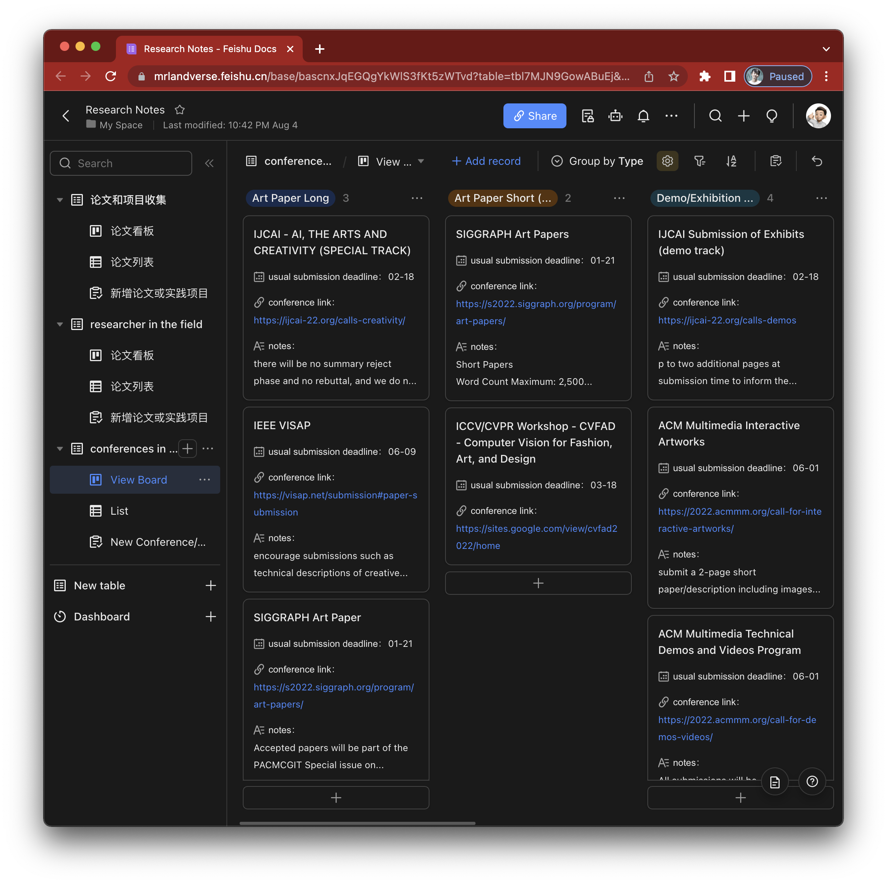

2022夏天的尾巴上
上一篇恰好是写在3月份，也是上海疫情前的岁月静好。之后就是3月底被关起来下不得楼的8周，和全上海人民一般样地抑郁地居家工作、缓慢推进landverse和不甚愉快地线上教学。学期结束恰逢上海防疫见松，5月下旬成功出逃太仓，四处飘荡6周直到6月底回沪。
噼里啪啦一年就这么过半，7月在家舒适了一整个月的暑假，算起来2022过了个体面的长达3个月的暑假。算上7月的几次出行，几乎每周都待在不同的城市并持续待一周左右，遍布7个城市（江苏太仓，浙江杭州，江西景德镇，安徽黄山，湖北武汉，广东深圳，山东青岛）的悠闲旅居也是好久没有过的经历。
而最近的8月初，想得多的是为下半年计划，一方面是landvese，一方面是为PhD准备。关于PhD的准备工作，很雄心勃勃地开了一个新的系列——从实践到研究。当然，landverse也希望能阶段性的汇总到 mrlandverse.com上，只是不敢立这个flag；即便六月初完成了完整版demo的实地测试和bp，后续紧接着也备好了安卓和AR眼镜的体验版，但整理出一个网站的行动不确定就能发生。
回武汉的高铁上和李蕾说起我有在写这么些东西，提到了前一篇的2022小期待，才意识到疫情之后整个人都佛了，现在觉得没啥好期待的，好好度过就成，也算另外一种实事求是的态度吧。
CMA 临行前的准备
课程：
之前的设想明显过于追求轻松和workload的均匀分布，更是过于严阵以待了。实际上不管是老师的期许还是同学的经验，似乎都希望一年完成这个要求通过的任务，而更加专注于研究产出（例如文章和项目等）。要求中的两节hub必修课（INFH5000&SOCH5000）和专业必修课（CMA5001）可以同时修完且安排上2门选修课（CMAA 5003 ）。除了一个必修的research method（IIMP 6010）外，下学期安排上两门选修课（CMAA 5015&5017）就能够完成学分要求。初略计划下的课表：
研究产出（的目的地）：
试着建立两个小的database，一个是publcation destination；一个是bibliography。也使用飞书搭建了框架，希望能坚持并且尽早完善，publication destination的收集也可以拉上同学们一起。类似地，参考范明明老师实验室的做法，收集对应会议的best paper也很值得一做。

记于2022年8月上旬，上海。